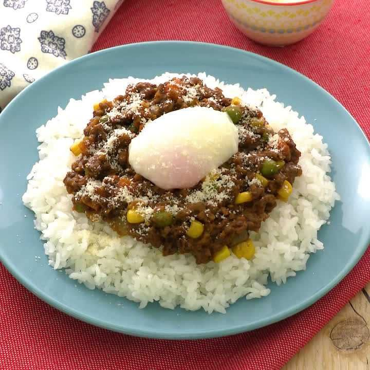

Dry Curry

Description
A style of Japanese curry but made with less water, and uses minced meat and mixed veggies instead of the usual diced meat, carrots, and potatoes.
Taken from Delish Kitchen
Ingredients (For 2 people)
Main ingredients
- Minced meat 200g
- Onions 0.5 head
- Carrots 0.5 stick
- Frozen mixed vegetables 100g
- Garlic paste 1 tsp
- Ginger paste 1 tsp
- Salad oil 1 tsp
- Instant curry roux 2 blocks
- Water 150 ml
- Salt and pepper to taste
- White rice 2 cups (300g)
- Soft boiled egg 2
- Powdered parmesan to taste